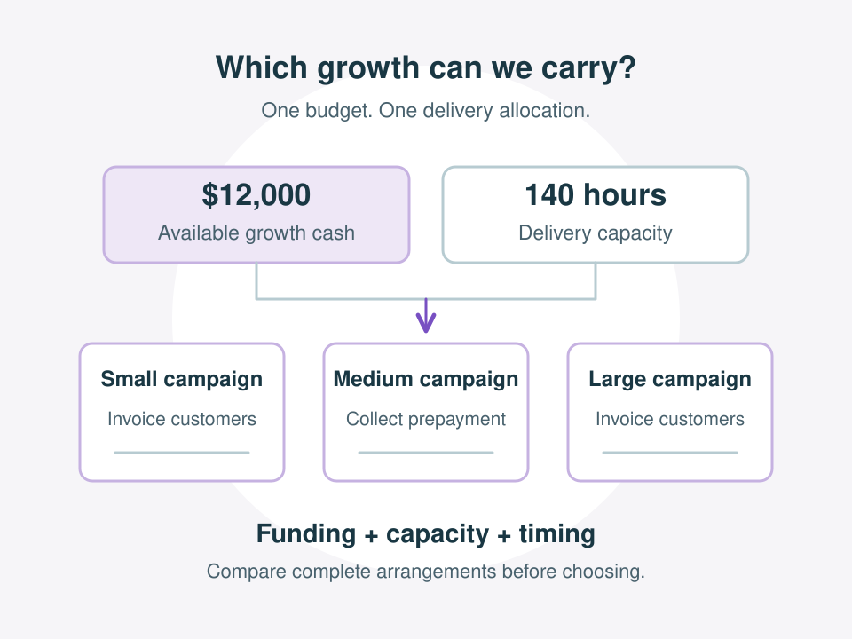

Establish what fits
Our customers are profitable. Can we afford more of them?
Leah has three days to commit campaign spending. Compare complete growth arrangements against the cash, delivery capacity and timing available to carry them out.

Leah runs a fictional service business selling a standardized package. Sales wants a larger campaign, delivery has 140 available hours, and finance has set aside $12,000 for growth after existing obligations. Each customer brings $1,500 of receipts, $500 of delivery expense and five hours of work. Leah needs a complete arrangement she can fund and deliver before deciding whether its assumed customer response justifies the spending.

Fund and deliver growth / Articles
The funding story includes the customer hurdle. The follow-up holds the commitment fixed, examines twenty-versus-two customer responses and changes only the test delay.
Establish what fits
Leah has three days to commit campaign spending. Compare complete growth arrangements against the cash, delivery capacity and timing available to carry them out.
Compare testing with choosing now
Leah can choose a growth arrangement now or buy an imperfect preference test. Compare the complete responses, including the fee and the campaign commitment cutoff.
The link opens Choose next month’s growth commitment with four fictional alternatives and installs Business growth when needed. Choose Calculate to inspect the operating comparison.
Use My cases → Import workflow run to open a retained comparison. Apply changed inputs and Recalculate before using its updated findings.
Supporting reports → Cash by date shows ordered receipts, payments and balances in Table or Chart view. Open the captured cash report.
For the test cases, open Supporting reports → Test before committing to compare choosing now with responses to possible signals. The main Decision summary retains the operating comparison. Decision process connects the findings to available responses.
The source example and CLI walkthrough identify the earlier authored implementation; the current workflow package and receipt above identify these worked cases.